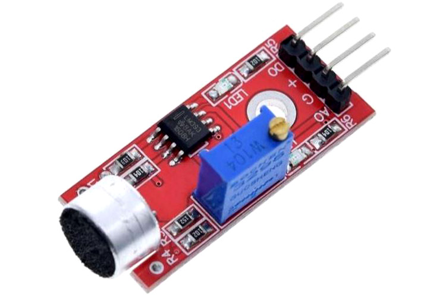
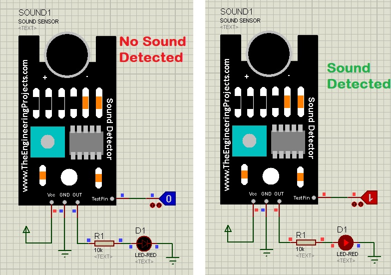
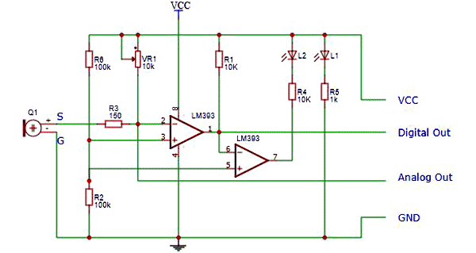

LM393 Sound Detection Sensor

Sound detection sensor module detects the intensity of sound.
Here sound is detected via a microphone and fed into an LM393 op-amp.
It comprises an onboard potentiometer to adjust the setpoint for sound level.
DATASHEET
Sound Detection Sensor Module Features & Specifications :
- 1. Operating Voltage: 3.3V to 5V DC
- 2. LM393 comparator with threshold preset
- 3. PCB Size: 3.4cm * 1.6cm
- 4. Induction distance: 0.5 Meter
- 5. Operating current: 4~5 mA
- 6. Microphone Sensitivity (1kHz): 52 to 48 dB
- 7. Easy to use with Microcontrollers or even with normal Digital/Analog IC
- 8. Small, cheap and easily available

LM393 IC
LM393 Comparator IC is used as a voltage comparator in this Sound Detection Sensor Module.
Pin 2 of LM393 is connected to Preset (10KΩ Pot) while pin 3 is connected to Microphone.
The comparator IC will compare the threshold voltage set using the preset (pin2) and the Microphone pin (pin3).
Microphone
The microphone in the Sound sensor module detects the sound. This sound is fed into the LM393 IC.
Preset ( Trimmer pot )
Using the onboard preset, you can adjust the threshold (sensitivity) of the digital output.
How to Use Sound Detection Sensor Module :
Sound Detection Sensor Module consists of four pins i.e. VCC, GND, DO, AO.
Digital out pin is connected to the output pin of LM393 comparator IC while the Analog pin is connected to Microphone.
The internal Circuit diagram of the Sound Detection Sensor Module is given below.
Using Sound Detection Sensor Module with a microcontroller is very easy.
Connect the Analog/Digital Output pin of the module to the Analog/Digital pin of Microcontroller.
Connect VCC and GND pins to 5V and GND pins of Microcontroller.
When the sound level exceeds the setpoint, an LED on the module is illuminated and the output is set low.

APPLICATIONS